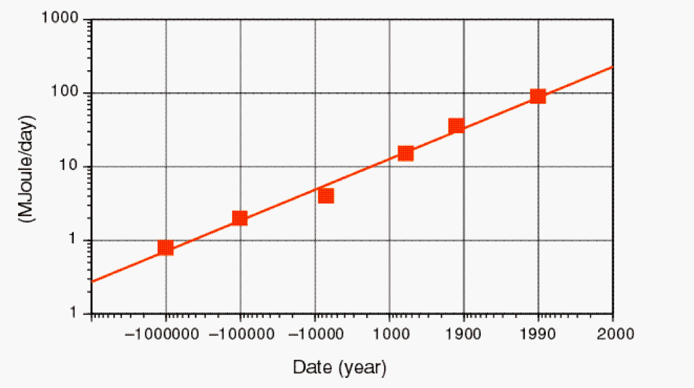

Fonti di energia
Consumi di energia
Il problema dell'energia è al giorno d'oggi di grandissima attualità. Cercheremo in questa sezione di capire perché l'energia è un problema e quali sono le principali soluzioni possibili.
Nella nostra analisi partiremo da un intervento dell'ultimo Premio Nobel per la Fisica italiano, Carlo Rubbia, presentato nel 2000 a una conferenza dell'IAEA tenutasi a Sorrento. L'energia è necessaria. Su questo punto tutti, dai politici agli uomini d'affari, dagli scienziati alla gente comune, sono d'accordo. Uno dei problemi principali da affrontare è costituito dall'inevitabile aumento di consumo di energia dovuto, tra gli altri fattori, allo sviluppo dei paesi poveri. Rubbia nella sua conferenza quantifica l'aumento dei consumi di energia pro-capite riportando la seguente tabella:

Il consumo di energia pro-capite indicato in figura proviene dall'approvvigionamento di cibo, dalle abitazioni, dall'agricoltura, dall'industria e dai trasporti. Oggi siamo arrivati a un consumo pro-capite di 0.9 GJ (quasi 1 miliardo di joule) al giorno. Tanto per dare un'idea questa energia corrisponde a bruciare 32 kg di carbone per persona al giorno.
Il dato più significativo però è costituito dal fatto che negli ultimi 150 anni il consumo di energia del pianeta è aumentato a un ritmo del 2.3% all'anno e continuerà a crescere perché è in costante aumento la popolazione mondiale. Non solo ma ci sono delle profonde differenze tra un Paese e l'altro nei consumi di energia: ad esempio la Svezia consuma 15 000 kWh di energia elettrica per persona all'anno contro i 100 kWh della Tanzania. Il kilowattora (kWh) è un'unità di misura per l'energia alternativa al joule:
1 kWh = 1000 W · 3600 s = 3.6 · 106 J.
Per stabilizzare il consumo di energia è necessario ma sicuramente non sufficiente produrre e usare l'energia in maniera più efficiente. La principale fonte di energia in questo momento è costituita dalle risorse fossili (carbone, petrolio e gas). Ai livelli attuali di consumi le risorse di petrolio sono destinate a durare per ancora 45 anni, quelle di gas per 63, quelle di carbone per 230. La fine dell'era fossile è vicina, conclude Rubbia, e nuove fonti di energia sono necessarie.
Fino ad oggi nella storia dell'umanità c'è sempre stata una fonte di energia dominante: il legno (fino al 1840), il carbone (dal 1840 al 1970) e il petrolio (dal 1970 ad oggi). Per il futuro ci sono due scenari possibili: uno scenario in cui continua ad esserci un'unica fonte di energia che potrebbe essere il gas naturale per un breve periodo e, forse, il nucleare (fusione?) in un secondo momento. Il secondo scenario possibile prevede invece la presenza di un mix di fonti di energia: eolica, biomasse, solare, geotermica, nucleare.